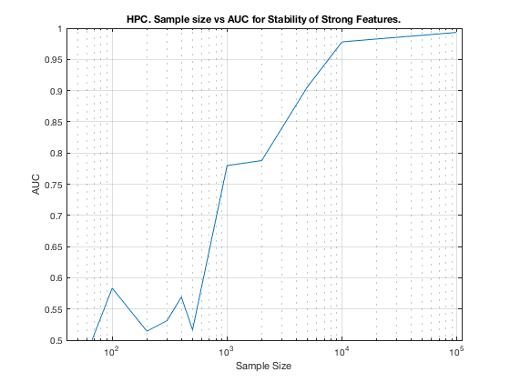

MltNet. Summary. HPC.
summary_stability_type("MltNet", 1)
TOTAL COUNTS: Strong=23, Weak=1300, Irrelevant=4
Figure 49. HPC. Sample size vs AUC for Stability of Strong Features.
_____________________________________________________________________

Table 49. Breakdown of Stability by Feature Type. HPC,
_______________________________________________________
(1) Number Features Repeat : number of unique features that were selected in a repeat
(2) Number Features Fold : number of unique features that were selected in a fold
(3) Feature Stability ~ Feature Selection Frequency
Sample_Size ALL__Number_Features_Repeat ALL__Number_Features_Fold ALL__Stability
___________ ___________________________ _________________________ ___________________
' 50 ' ' 5.1 +/- 1.6 ' ' 1.4 +/- 0.4 ' ' 0.028 +/- 0.049 '
' 100 ' ' 5.6 +/- 2.2 ' ' 1.6 +/- 0.5 ' ' 0.032 +/- 0.055 '
' 200 ' ' 5.7 +/- 2.1 ' ' 1.6 +/- 0.5 ' ' 0.034 +/- 0.071 '
' 300 ' ' 5.6 +/- 2.0 ' ' 1.7 +/- 0.5 ' ' 0.032 +/- 0.081 '
' 400 ' ' 7.4 +/- 2.0 ' ' 2.1 +/- 0.5 ' ' 0.040 +/- 0.083 '
' 500 ' ' 7.1 +/- 2.7 ' ' 2.0 +/- 0.6 ' ' 0.040 +/- 0.089 '
' 1000 ' ' 8.6 +/- 2.4 ' ' 2.4 +/- 0.6 ' ' 0.048 +/- 0.100 '
' 2000 ' ' 10.3 +/- 2.4 ' ' 3.0 +/- 0.6 ' ' 0.059 +/- 0.109 '
' 5000 ' ' 13.9 +/- 2.2 ' ' 3.9 +/- 0.6 ' ' 0.074 +/- 0.119 '
' 10000 ' ' 16.5 +/- 2.5 ' ' 4.5 +/- 0.5 ' ' 0.093 +/- 0.138 '
' 100000 ' ' 18.8 +/- 2.1 ' ' 5.3 +/- 0.3 ' ' 0.107 +/- 0.149 '
Sample_Size STRG_Number_Features_Repeat STRG_Number_Features_Fold STRG_Stability
___________ ___________________________ _________________________ ___________________
' 50 ' ' 3.4 +/- 1.6 ' ' 0.9 +/- 0.4 ' ' 0.042 +/- 0.073 '
' 100 ' ' 3.7 +/- 1.9 ' ' 1.1 +/- 0.4 ' ' 0.051 +/- 0.080 '
' 200 ' ' 4.0 +/- 1.7 ' ' 1.1 +/- 0.2 ' ' 0.060 +/- 0.109 '
' 300 ' ' 4.2 +/- 1.7 ' ' 1.2 +/- 0.3 ' ' 0.054 +/- 0.119 '
' 400 ' ' 5.1 +/- 1.9 ' ' 1.5 +/- 0.4 ' ' 0.070 +/- 0.129 '
' 500 ' ' 5.2 +/- 2.5 ' ' 1.5 +/- 0.5 ' ' 0.069 +/- 0.131 '
' 1000 ' ' 6.7 +/- 2.1 ' ' 1.9 +/- 0.5 ' ' 0.088 +/- 0.142 '
' 2000 ' ' 8.4 +/- 1.9 ' ' 2.5 +/- 0.4 ' ' 0.112 +/- 0.153 '
' 5000 ' ' 11.7 +/- 1.8 ' ' 3.3 +/- 0.4 ' ' 0.149 +/- 0.158 '
' 10000 ' ' 14.8 +/- 2.1 ' ' 4.1 +/- 0.4 ' ' 0.188 +/- 0.160 '
' 100000 ' ' 17.6 +/- 1.8 ' ' 4.9 +/- 0.2 ' ' 0.223 +/- 0.158 '
Sample_Size WEAK_Number_Features_Repeat WEAK_Number_Features_Fold WEAK_Stability
___________ ___________________________ _________________________ ___________________
' 50 ' ' 1.5 +/- 1.2 ' ' 0.5 +/- 0.5 ' ' 0.019 +/- 0.015 '
' 100 ' ' 1.7 +/- 1.2 ' ' 0.5 +/- 0.4 ' ' 0.019 +/- 0.013 '
' 200 ' ' 1.3 +/- 1.4 ' ' 0.4 +/- 0.4 ' ' 0.016 +/- 0.010 '
' 300 ' ' 1.2 +/- 1.2 ' ' 0.3 +/- 0.5 ' ' 0.013 +/- 0.008 '
' 400 ' ' 2.0 +/- 1.3 ' ' 0.6 +/- 0.5 ' ' 0.020 +/- 0.013 '
' 500 ' ' 1.7 +/- 1.2 ' ' 0.4 +/- 0.4 ' ' 0.018 +/- 0.013 '
' 1000 ' ' 1.7 +/- 1.3 ' ' 0.5 +/- 0.4 ' ' 0.017 +/- 0.017 '
' 2000 ' ' 1.5 +/- 1.2 ' ' 0.5 +/- 0.5 ' ' 0.020 +/- 0.017 '
' 5000 ' ' 2.1 +/- 1.4 ' ' 0.6 +/- 0.6 ' ' 0.023 +/- 0.020 '
' 10000 ' ' 1.6 +/- 1.3 ' ' 0.4 +/- 0.4 ' ' 0.016 +/- 0.019 '
' 100000 ' ' 1.1 +/- 1.0 ' ' 0.3 +/- 0.4 ' ' 0.013 +/- 0.017 '
Sample_Size IRRE_Number_Features_Repeat IRRE_Number_Features_Fold IRRE_Stability
___________ ___________________________ _________________________ ___________________
' 50 ' ' 0.3 +/- 0.5 ' ' 0.1 +/- 0.2 ' ' 0.018 +/- 0.015 '
' 100 ' ' 0.2 +/- 0.4 ' ' 0.1 +/- 0.2 ' ' 0.014 +/- 0.008 '
' 200 ' ' 0.3 +/- 0.6 ' ' 0.1 +/- 0.2 ' ' 0.023 +/- 0.008 '
' 300 ' ' 0.3 +/- 0.5 ' ' 0.1 +/- 0.2 ' ' 0.027 +/- 0.028 '
' 400 ' ' 0.2 +/- 0.6 ' ' 0.1 +/- 0.2 ' ' 0.022 +/- 0.016 '
' 500 ' ' 0.2 +/- 0.5 ' ' 0.1 +/- 0.2 ' ' 0.018 +/- 0.006 '
' 1000 ' ' 0.1 +/- 0.4 ' ' 0.0 +/- 0.2 ' ' 0.015 +/- 0.011 '
' 2000 ' ' 0.3 +/- 0.5 ' ' 0.1 +/- 0.2 ' ' 0.017 +/- 0.010 '
' 5000 ' ' 0.1 +/- 0.3 ' ' 0.0 +/- 0.2 ' ' 0.011 +/- 0.010 '
' 10000 ' ' 0.1 +/- 0.2 ' ' 0.0 +/- 0.1 ' ' 0.010 +/- 0.011 '
' 100000 ' ' 0.1 +/- 0.3 ' ' 0.0 +/- 0.2 ' ' 0.015 +/- 0.005 '